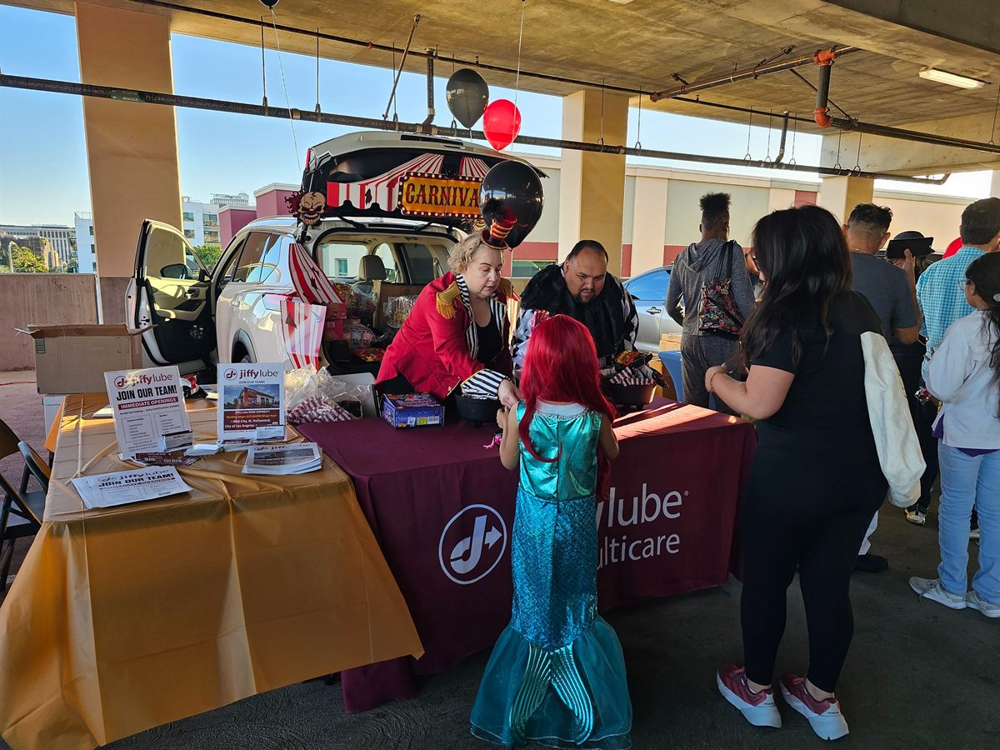
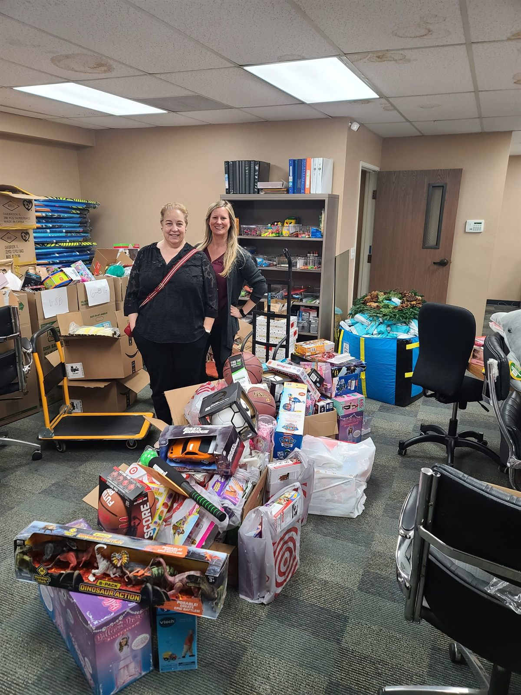
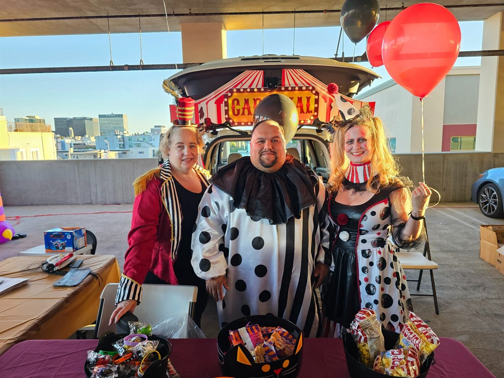
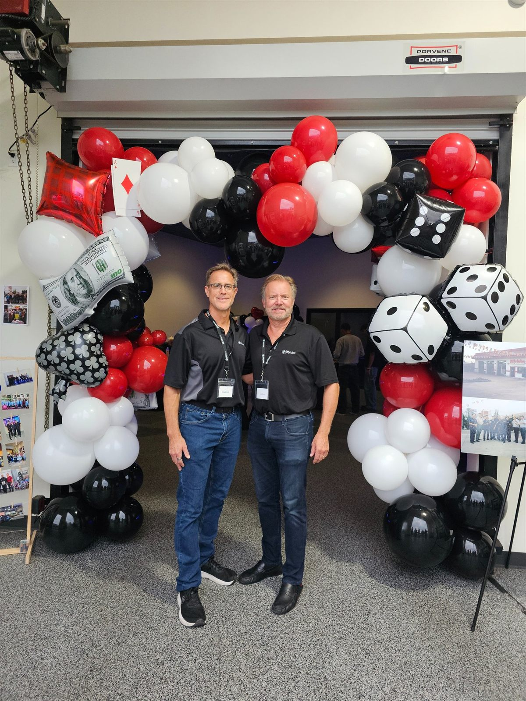
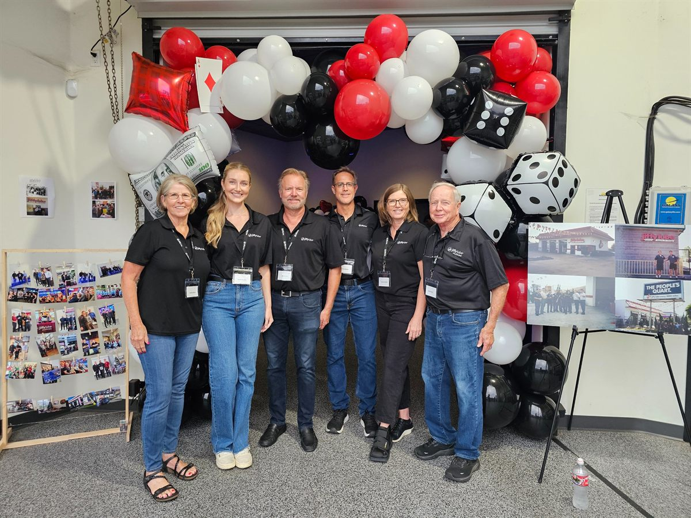
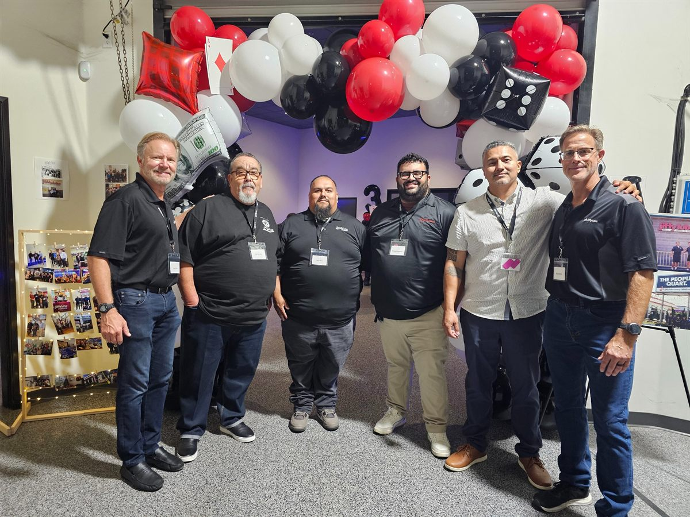

How a
visit goes
Five steps, from the moment you pull in to the moment you leave.
Jiffy Lube service centers across Southern California, run by the same family since 1995. Convenient vehicle maintenance performed by well-trained technicians with a passion for great guest service.
To stay safe, efficient, and on the road longer.
Motor oil lubricates, cleans, cools and protects your engine. We follow your manufacturer’s recommendation.
02From brake pads to brake fluid, keeping your stopping power responsive and reliable.
03Tested, replaced, or terminals cleaned, to keep your starting and charging system running.
04Whether filtering a fluid or the air, and every fluid from coolant to transmission.
05Check engine lights, spark plugs, serpentine belts and radiator hoses.
06Emissions and safety testing, plus comprehensive rideshare vehicle inspections.
Halloween candy handouts, Boys & Girls Club events, and our annual Christmas toy drive. Community Service Hours are a paid benefit here, not a photo opportunity.






There are many employers who can provide you with a job, but consider one who can grow your job into a career. The Alamitos Group is a stable and fast growing company that can.
We are focused on building your resume with leadership experience and supplying the tools you need to achieve your goals.
Our crews work hard to get you in, out and back on the road — and they genuinely care about every guest who pulls into the bay. Here are 52 five-star Google reviews from guests at our 15 Jiffy Lube stores, in their own words.
“I had a great experience at Jiffy Lube today! The technician who helped me was very diligent, professional, and took the time to make sure everything was done correctly. The service was fast, thorough, and the staff was friendly throughout …”
“Had a great experience at Jiffy Lube today. The staff was professional, friendly, and got me in and out quickly. They explained everything clearly without any pressure or upselling. My oil change was done fast, and they even checked a few other items to make sure my vehicle was in good shape. It’s hard to find honest and efficient service these days, but this location delivered. Highly recommend and will definitely be back!”
“This is the second time I’ve visited this place, and I would definitely recommend it for getting your car inspected or having mechanical repairs done. The mechanics do a great job; they clearly explain the work they performed and let you know if the car needs any further repairs. They are very detail, oriented which is what has really built my confidence in them and I’ve had a good impression of this place since day one.”
“My son took my car there. We got a tire rotation signature oil change service and they put in a new cabin air filter. I was very impressed at the level of service we we received. The prices were awesome and to my surprise much lower than expected. Thank you.”
“On Memorial Day Jiffy Lube was open. As soon as I arrive at the facility, I was greeted by Dave. He’s very polite and provides good customer service. Within two minutes, my car was serviced by three different repairman and within 30 minutes I was able to have new full synthetic Mobile 1, new cabin filter, tire rotation, and fluid filled up. Kudos Dave and all the service men”
“Today’s Visit to Jiffy Lube on State Ave went great. The crew working today was super friendly , knowledgeable and they had everything ready to Go in about 30 or less. They answered all my questions without hesitation. I like that. I’ll come back to this location for sure. Thank you guys !”
“Wonderful people! I just stayed in the car while they worked and only went down to pay and have the condition of my vehicle from their comprehensive check explained to me. They explained also what I’d need to replace next and how much it would cost so I can prepare for it.”
“Excellent service today from Daelyn and David! They provided friendly, efficient, and effective service, and my oil change was completed quickly. I really appreciated their professionalism and would definitely recommend them.”
“I came in for an oil change and was immediately greeted and assisted. From the cashier to the mechanic, everyone was pleasant, friendly, and knowledgeable. It was clear they take pride in their work, they were thorough, took the time to address all my concerns, and still provided efficient service. I’ll definitely be returning for all my future car needs.”
“The service were excellent; the staff was extremely helpful and friendly. The price was reasonable.. I’m happy with the service and price. I’ll be sure to go back when it’s time for another oil change.”
“It was a good experience. I would come back. It was the best service I had getting my oil changed. I appreciate the help I received. I wouldn't want to go anywhere else. They did a really great job. I can feel the difference in my car that it has more power when I drive. It feels smoother and lighter. Good job to the jiffy lube team.”
“I'm a regular patron of this Jiffy Lube and I'm happy to say that this visit was exceptional. Just an oil change and no upsale. I appreciate the no upsale because when a service IS suggested, I usually do it or seriously consider it (if funds allow it). This time i was told everything was in check. THIS made me more trusting of this visit and future visits.”
“I had a fantastic experience at Jiffy Lube! The staff was incredibly friendly and welcoming. They took the time to explain what they were doing, pointed out the issues with my car in a clear way, and never once tried to upsell me. I left feeling confident about the work they did. I’d definitely go back!”
“The guys who work at Jiffy Lube are AMAZING! I’ve been taking my work truck to jiffy lines for years. They always explain in detail what other services I need. No prsssure just honesty. The guys are so informative. I got my oils changed & …”
“I came in for an oil change and honestly didn’t have much understanding of the process or what needed to be done. Raul came out and made everything so easy to understand. He walked me through the entire process, explained what was needed with my car, and answered all of my questions. He even walked me into the waiting room, offered me coffee, and made sure my daughter was comfortable while we waited. His customer service and attention to detail were outstanding. Raul is a great guy and truly went above and beyond to make sure I felt comfortable and informed. I really appreciate the way he treated me and my daughter. Great experience!”
“On June 7, 2026, I visited Jiffy Lube located at 4201 Florence Ave. for vehicle maintenance. I received an oil change, and the staff also cleaned my vehicle’s lights. The service was completed in a timely and professional manner. The employees were friendly, courteous, and provided excellent customer service throughout my visit. I was very satisfied with the quality of work performed and appreciated their attention to detail. Overall, my experience was positive, and I would recommend this Jiffy Lube location to others seeking reliable vehicle service.”
“My oil light was on so stopped in to get it checked out, also my car barely started in the morning. The workers got my car in right away and noticed how they were all being very professional and making sure to check everything. They did an amazing job and I will definitely be going back!!!”
“Had my brake fluid replaced. Service included bleeding of the brake system at each of the 4 tires. Price was reasonable. I used a coupon and paid with gift cards from Costco. You could view the work from a distance. They checked other …”
“Very friendly and oil change service was quick! There were two cars ahead of me today and my total wait time was 45 min from pulling up to leaving which was very reasonable.”
“Always great service. Someone greets you right away even if it is not the person that will be assisting you. They communicate along the way and are able to give an accurate time of completion. So helpful since I am always squeezing in an …”
“I Highly recommend this location to anyone and everyone! I brought my car in for service on Feb 10th and Sazo, the Manager was very nice and helpfuI. I was so impressed by his customer service, knowledge, and …”
“Always a pleasure coming here management is great team is doing great all that good stuff honest reputable and real people this is like one of the best jiffy lubes you can find in Los Angeles”
“Absolutely thrilled with my Jiffy Lube visit! OMG, the service was the most wonderful I’ve ever had, full of honesty and integrity from start to finish. The team diagnosed the issue quickly and explained everything in simple terms, with …”
“came in to get my oil changed, and a tech inspection revealed my brake pads were shot and needed to be replaced. I believed i had replaced them within the previous 2 years but didnt have records so approved the estimate with some …”
“They were respectful and looked at what I requested without upselling. I ended up getting a second service because they were fast. This is my regular spot and this has been consistent for the past few years.”
“They did a great job my car is new so I got to be on top of the oil change plus it was fast and staff was nice”
“All personnel were kind, professional and respectful. It was my first time using them. They checked the entire engine. I needed some other things changed, which they did at a very fair cost. The young man named Tito was super friendly! Thank you Jiffy Lube!!!!!”
“If you’re looking for a place you can trust with your car, this is it. Reliable, efficient, and an all-around fantastic team. I’ll definitely be coming back, and recommending them to everyone I know! …”
“I went here with a tight deadline. I wanted an oil change and tune up in less than 2 hours. I asked the 1st mechanic and he said it would take at least 2 hours. I did have a car or 2 in front of me. The 1st mechanic asked a more experienced mechanic who said it wouldn’t take that long. But the 1st guy was right. I will say they did a good job. There were doughnuts in the waiting room and a tv. I was quoted before they worked on my car and the price was the same after. This place did what they were supposed to do so I have no complaints. One of the mechanics told me I didn’t need to change my engine filter yet and told me to double check if my transmission fluid was changed before so I wouldn’t pay unnecessarily for it. I appreciate that. Maybe I wish they were faster, but I don’t want to ding them for me running behind on my schedule. I appreciate they are nearby, I got to walk-in with no appointment, they were friendly enough, and I didn’t feel like they were trying to overcharge me.”
“Great experience at this location! Joseph checked me in and he was so polite and genuine. The service went smoothly. It was reasonably priced and quick! And most importantly, Raúl was incredible. The way he took care of me but also his team …”
“This Jiffy Lube in Bell is great! They are quick with their oil changes and great with their other services. Today I went in to get my passenger axle replaced. I saved over $1100 compared to what I would have had to pay at the Kia dealership in Cerritos. Very happy with their service as always!”
“Jiffy Lube on Long Beach Blvd. was superb. They were fantastic. I received a spark plug and coil change. I was unable to get a transmission oil changed due to type of car I have but the employee there searched around to a few different locations to find a location that would be able to assist. All in all they were very friendly they escorted me into the building to wait for my carand back to my car when the service was done. Now my car seems to be doing really great. What a positive experience. Thank you again for the guys at Jiffy Lube on Long Beach Blvd.”
“Second time here because the service is excellent, the team here is polite- works quickly & Enrique carefully explained some details for me. I'll be back the next time I need my car serviced. You can wait outside or inside where they offer A.C., water and coffee.”
“I want to express my sincere gratitude to Mario the mechanic at Jiffy Lube in Bellflower, CA.
I was visiting Bellflower from out of town yesterday and found myself in a stressful situation with my vehicle. As a senior citizen from a rural community, far from home, I was worried about whether my car could make the three-hour drive back home through heavy traffic. I was tired, concerned, and unsure what to do. I decided to take my car to the nearby Bellflower Jiffly Lube.
The Jiffy Lube greeter lady told me that she would ask their top mechanic, Mario, to give me 10 minutes of time to look at my car problem.
Mario offered to take a quick courtesy look at my car, near the end of a long, hot work day. He took the time to look at my engine, helped me with my oil issue, topped off my oil with a half quart of oil (two weeks removed from my Jiffy Lube full oil change service back at home) and worked diligently to coach me on how to get my car back in good working condition.
What impressed me most was Mario's attitude. He was patient, empathetic, and genuinely kind and helpful throughout the entire experience.
My family has been loyal Jiffy Lube customers in our small rural hometown for decades, and Mario reminded me why. He simply said he wanted to help, if he could. That kind of compassion and service is rare these days. Congratulations, Jiffy Lube, for hiring such intelligent and helpful employees!
Thank You, Mario! I understood Mario's diagnosis of my engine problem, and was easily able to take Mario's advice, purchase a maintenenace product he recommemded from the near-by auto parts store (Mario gave me perfect directions to find the auto parts store) and using the product as Mario had recommended, my engine alert light went out, the car began running perfectly again, and I was able to make the 3-hour trip back home safely, smoothly, and with full peace of mind. He did an excellent job accurately diagnosing my problem, and coaching me on how to fix my car.
More importantly, however, he demonstrated automotive expertise (and true kindness) when I needed it most, far from home.
He reminded me that there are still good people (and good companies) in the world!
Jiffy Lube is fortunate to have an employee like Mario.
Thank you, Mario, for your outstanding service and for helping a senior in my time of need. My wife and I will continue to be loyal long-term customers of Jiffy Lube.
Thank You!”
“They were really helpful and so friendly. Everything was done quickly and they made the perfect recommendations to keep my car running great. I will definitely go here again. Excellent service.”
“The service technicians were kind and helpful. Completed the service to my vehicle in a timely manner. Will definitely return to this Jiffy Lube.”
“I’ve had nothing but positive experiences when I’ve taken my car to the La Brea location in Hollywood. David is my go to person- ask for him!! He’s extremely fast when he’s dealing with diagnostics and he never makes you wait. Recently I …”
“Great experience and staff. Did a great job explaining to me about the condition of both ky in cabin filter, and engine fuel filler. One recommendation I would say is pull be nice if they could put one of the plastic stickers in the windshield that shows the mileage of your next service.
Got me in/out for my oil change quickly, will be back for sure!”
“I cannot express how thankful I am for Miguel and Humi! I wasn’t sure what was going with my car; I just knew it wasn’t good. I’d just had an oil change about 5wks ago, but my low oil pressure light came on in my car. Miguel said to bring it in and they’d take a look at it. He confirmed my oil was low, then began the initiative of determining why. He made an initial assessment but said if I could bring it back he could better examine. Uncovered an issue with my oil pressure sensor and saved me THOUSANDS of dollars in repair! Both Miguel and Humi were very kind, and informative! Beyond Excellent service!!!!”
“Hello, I usually don’t do the review thing, I’m old school changed oil myself. Getting old and getting rid of old oil and the new cars good luck . These guys did one hell of job on my rv .15 min in and out no up selling. Simply in and out . Hard to find these days . I’ll be back forsure highly recommend”
“Took my Camaro for an oil change and Manuel took care of me today and gave great service. I was honestly having a rough day and he made the whole experience easy and stress free, super professional and genuine. Appreciate the great customer service definitely will be back 👌 …”
“The service was great! It didn’t take too long. I was out of there in about 30 minutes. The price for full synthetic was reasonable. The staff was knowledgeable as I asked a couple questions. Great experience all around.”
“Words are not enough to express my experience. I had my car service at Jiffy Lube on Western. I was greeted by Raul he explained the process very professional. No hidden fees just straight out told me what I would be charged. Loved that.... Picked up my car entered the lobby treated with the outmost professionalism I was greeted by Ernie ,Kristopher and my service guy Raul . Cant believe how nice all of them were such hard working guys. Oh and not to mention Adan what a humble nice guy he opened my door and told me have a nice day. I highly recommend coming here very friendly respectful crew . If I can give them 100 stars 🌟 I would thank you guys. Made my day.... Almost left out what great service they offer fast and just very professional. Thank you guys.”
“Great Service
I had a great experience getting my brakes repaired here! The service was …”
“Fast, Professional Transmission Flush + Test Drive Needed a transmission flush and Jiffy Lube handled it perfectly. Service was fast and excellent. I especially liked that they test-drove the car before giving it back — nice attention to detail. Would definitely return! Thank you team Fernando and Jonathan.”
“The team at this Jiffy Lube location is awesome. They did a fantastic job getting my vehicles taken care of and as an added bonus their customer service is phenomenal. I am from out of state and they made it seem like they have known me for years.”
“My second oil change here. Service is always top notch here. Everyone is always really helpful and kind. Mohammed has such a good work ethic as does all the other gentlemen. I love that nothing is pushed on you when it's not needed.”
“@Manchester, the staff was knowledgeable about services needed. Polite and professional. They were at work and ready to go at 7am. Job was finished very quickly. Waiting room was clean with fresh coffee and water.”
“Fantastic Jiffy Lube - the only one I'll use going forward. Great location on a corner with easy in/out access. The team there is amazing! Jeremy, the manager, was very kind and welcoming and thanked me for my military service while making sure I got the discount Jiffy Lube gives for military. Alma was also amazing as she handled everything for me, made recommendations, and ensured that my vehicle was taken care of. Honestly, the whole team there was excellent.”
“They always take care of me here - two high mileage vehicles, no issues. Joshua does an amazing job on intake - very kind and helpful. Yared takes care of you at checkout with A+ service. In and out in under an hour, coffee and water in the lobby”
“I had a good experience with them. It was my 1st time. I came first for oil change and Alan diagnosed what my Van needed to change with the parts. Like the battery, blade wipers and air filter. It was fair enough and reasonable to change it. So I did Have an oil change, and so whatever it needed. It was reasonable price too compared to a dealer. And It was fast, It took me like 45 mins.they did the service... Im glad I found this Jiffy lube in Western, Korean town place which near to my place as well.”
“This was my 3rd time at Jiffy Lube and it’s been the same each time. The staff are very polite and professional and do not pressure you with upselling other services. They even showed me the work they did on my last visit and recommended I could wait until my next visit to get a service I thought I needed now. Honest, dependable, hard working all together to make my visit there memorable.👍🏻”
Reviews are quoted from Google Maps, as of October 2026.
Build a meaningful career with a family-owned company that invests in its people.